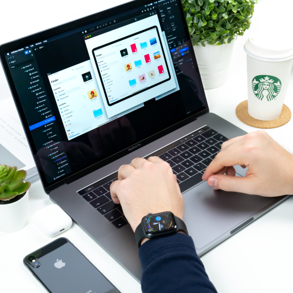

Digital Product Designer.
I am Portier, experienced Digital Product Designer based on Florida.
I am here to help you build your amazing product.
I am here to help you build your amazing product.
UI-X Design
The time that leads to mastery is dependent on the intensity of our focus.
Product Design
The time that leads to mastery is dependent on the intensity of our focus.
Writing
The time that leads to mastery is dependent on the intensity of our focus.
Portier - The ultimate templates & components library.
The Coporate - Card for Indian Startups

Components Web App Interface
I build products for companies & startups.
Everything in nature has a structure, a way that the parts relate to one another, which is generally fluid and not so easy to conceptualize.
Everything in nature has a structure, a way that the parts relate to one another, which is generally fluid and not so easy to conceptualize.
What people say about me
These steps are: Deep Observation (The Passive Mode), Skills Acquisition (The Practice Mode), and Experimentation (The Active Mode).
Empathy plays an enormous role in learning and knowledge.
“In fact, whenever you must learn a new skill or alter your career path later in life, you reconnect with that youthful, adventurous part of yourself.”
Domingo Menenses
Cobrand - CEO
“In fact, whenever you must learn a new skill or alter your career path later in life, you reconnect with that youthful, adventurous part of yourself.”
Karla Benivez
Tinnie - CO-Founder
“In fact, whenever you must learn a new skill or alter your career path later in life, you reconnect with that youthful, adventurous part of yourself.”
Mark Clark
Airbnb - Lead Designer
I’ve worked with more than 200 companies & startups around the world
50%
One repays a teacher badly if one remains only a pupil.
90%
One repays a teacher badly if one remains only a pupil.

My main goal is too keep my customers satisfied.
Even with skills that are primarily mental, such as computer programming or speaking a foreign language.
it remains the case that we learn best through practice and repetition—the natural learning process.
If we keep practicing, we gain fluency; basic skills are mastered, allowing us to take on newer and more exciting challenges.
How about we make something awesome together?